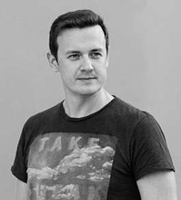

<div class="row">
        <!-- Blog Entries Column -->
        <div class="col-md-12">
            <h3>About me</h3>
            <hr>
            <div style="margin-top: 15px;">
                <div style="float: left; margin-right: 15px;">
                    
                </div>
                <p>
                    My name is Alex Brazhenko. I have been living in Seattle Area since I moved here from Ukraine in March of 2016. 
                    Make a difference in everything I did one of the main satisfaction in my life. Even in code. 
                    I like it.  Coding is challenging and exciting! Really. You always need to learn something new.
                    You can participate in interesting projects and have fun.
                </p>
                <p>
                    I am a Software Engineer with 10+ years of development experience. My main specialization is Front end. 
                    I have experience in development of different software products, from small web sites on WordPress to big enterprise applications. Have background in automation of HR services, talent management, education, e-learning and finance. Familiar with Data analysis.  
                </p>
                <p>
                    Most of all in development I like to be in the beginning of something new: new project, new team, new company.
                    At least, I would like to bring new knowledge and get as much as possible in every team I work with, to make 
                    our contribution very useful. I also like to learn new technologies.  
                </p>        
                <p>
                    Since May of 2016 I have been working as a Front-end developer at Microsoft Dynamics CRM dev team (as a vendor).
                    I don't want to place my resume here :) so, if you interesting, you can find it on my always up-to-date 
                    <a href="https://www.linkedin.com/profile/view?id=109443060">LinkedIn profile</a>  
                </p>
                <p>
                    <b>Mostly work with:</b> JavaScript, TypeScript, Angular 2, Redux, ReactJS, jQuery, D3, HTML, CSS, SASS/LESS, XML, MySQL, MS SQL, MongoDB, AJAX, Node.js, HighCharts, Power BI, Grid Stack, Bootstrap
                </p>
                <p>
                    <b>Also have some experience with:</b> Python, RegExpr, R, R Studio, OpenCV, Hadoop, Map Reduce, c#, PHP 
                </p>
                <p>
                    <b>Tools:</b> Git, GitHub, TFS, CodeFlow, Visual Studio 2015, Visual Studio Code, Sublime Text, Adobe Dreamviewer, Adobe Captivate
                </p>    
            </div>    
        </div>
</div>
